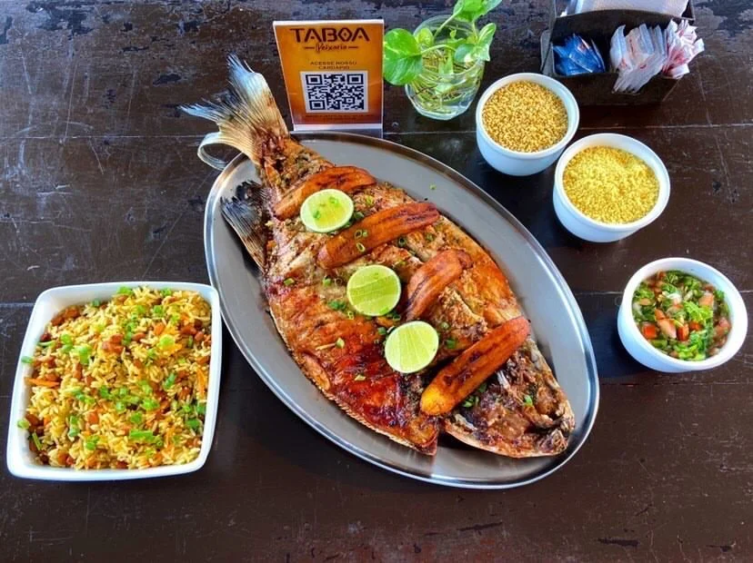

Quem são os pré-candidatos a prefeito de Manaus nas eleições municipais de 2024 |
|
| Ao menos seis nomes aparecem como possíveis candidatos a prefeito de Manaus (AM) nas eleições municipais de 2024.O atual prefeito David Almeida (Avante) tentará a reeleição e também terá como adversários, além de Cidade, o deputado federal Amom Mandel (Cidadania), o Capitão Alberto Neto (PL), o advogado Marcelo Ramos (PT) e o deputado estadual Wilker Barreto (Mobiliza). |
|  | Conheça esse restaurante com vista de frente para a Ponta Negra |
| Quando você visita um estado ou alguma cidade turística o principal desejo é fazer uma imersão completa na cultura, gastronomia e paisagens do local. |